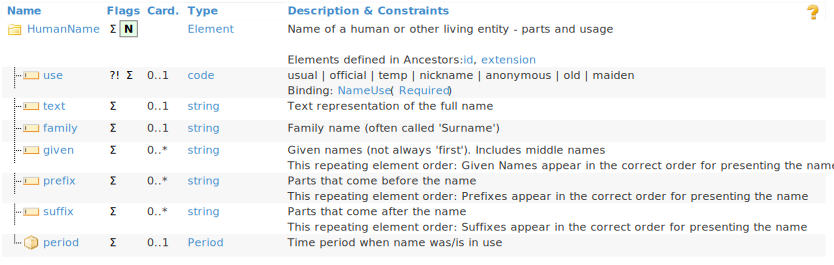
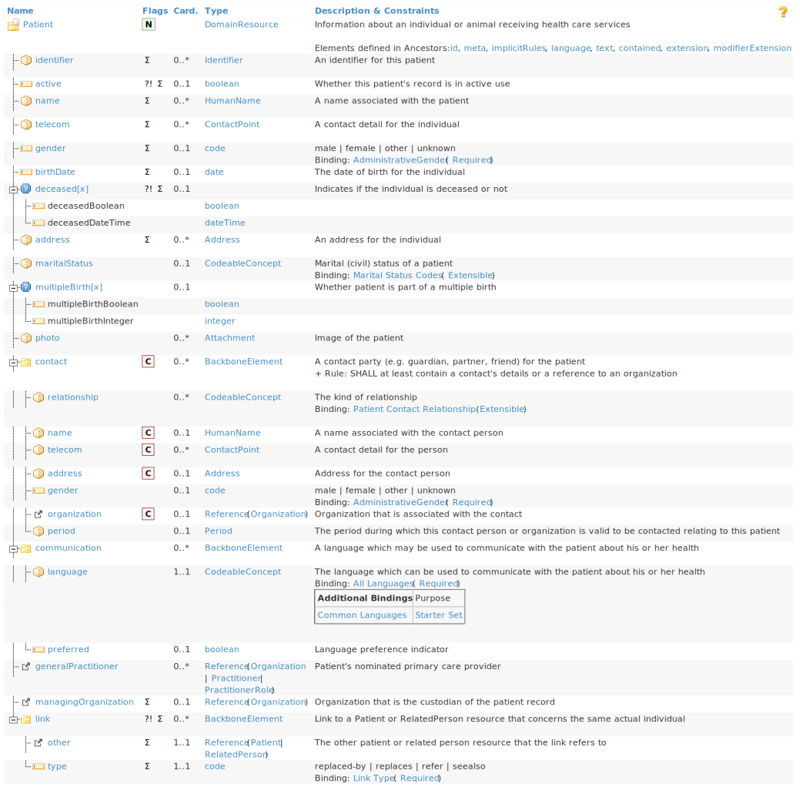
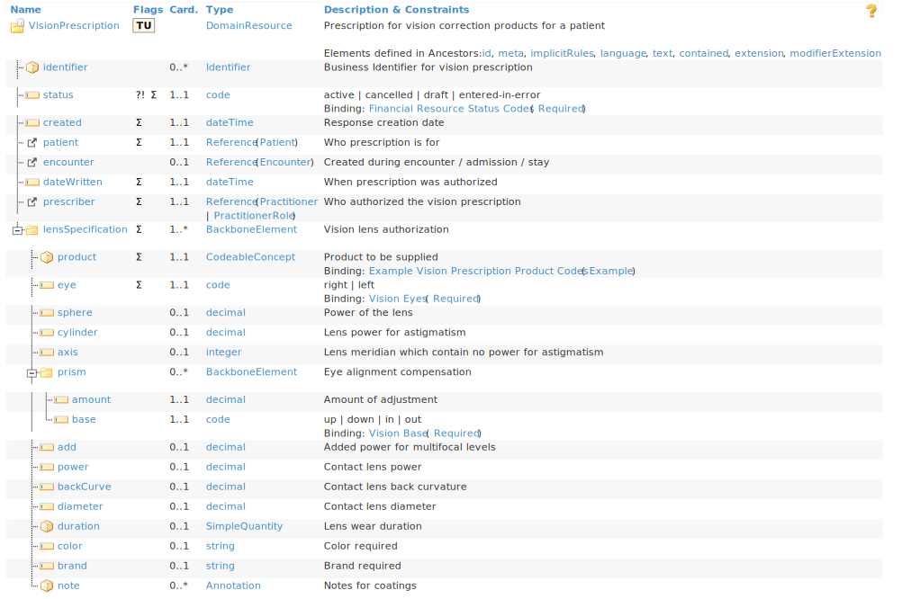
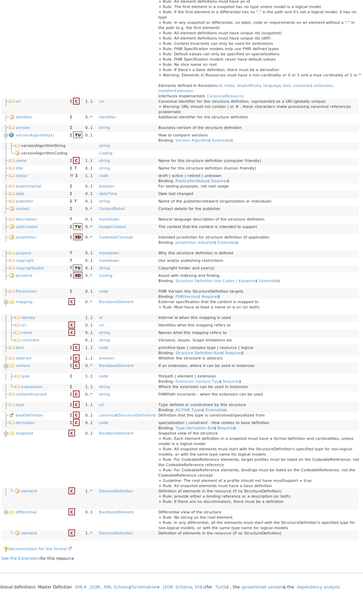
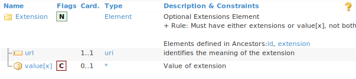
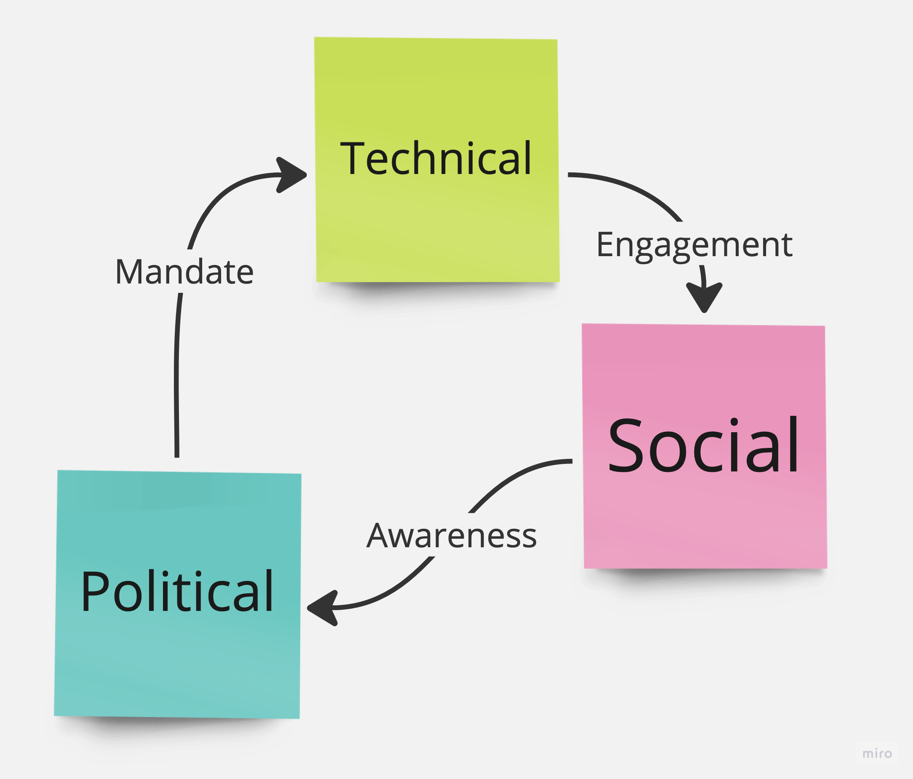

How FHIR is tackling a wicked problem with technical, social and political solutions
RORO Meetup // 2023-07-26 (Boyd Community Hub, Southbank)
1. Intro
2. The Problem
It’s hard to exchange data between systems in the healthcare industry.
3. What is FHIR?
Fast Healthcare Interoperability Resources
FHIR is a framework for working with data in healthcare applications.
Its goal is to enable interoperability of our healthcare data.
3.1. Technical
FHIR defines:
- A collection of data models that might come in handy when building a healthcare application.
- A RESTful API for interacting with healthcare data which conforms to these data models.
- Ways of extending itself to model healthcare data in a wide range of use-cases and jurisdictions.
3.1.1. Datatypes, primitive and complex
FHIR defines its own type system.
The following are several types that FHIR provides:
- Example:
DateTime
A primitive type: Encodes one value
DateTimeHelps to standardise on one unambiguous date formatrequire 'date' %w[%Y %Y-%m %Y-%m-%d %Y-%m-%dT%T %Y-%m-%dT%T%z].each { |f| puts DateTime.now.strftime f }
2023 2023-08 2023-08-02 2023-08-02T19:46:37 2023-08-02T19:46:37+1000
All of the above are valid values for a FHIR
DateTime - Example:
HumanName
A complex type: Composed of primitive types and other complex types
HumanName: Has thought of things that you wouldn’t have
3.1.2. Resources
Resources are another kind of data model in FHIR, comprising values with primitive and complex types.
They model domain-specific entities.
They are the ’R’ in FHIR.
- Example: Patient
“Demographics and other administrative information about an individual or animal receiving care or other health-related services.” 
- Example
A FHIR Patient serialised to JSON
XML and Turtle representations are also supported.
{ "resourceType" : "Patient", "id" : "xcda", "identifier" : [{ "use" : "usual", "type" : { "coding" : [{ "system" : "http://terminology.hl7.org/CodeSystem/v2-0203", "code" : "MR" }] }, "system" : "urn:oid:2.16.840.1.113883.19.5", "value" : "12345" }], "active" : true, "name" : [{ "family" : "Levin", "given" : ["Henry"] }], "gender" : "male", "birthDate" : "1932-09-24", "managingOrganization" : { "reference" : "Organization/2.16.840.1.113883.19.5", "display" : "Good Health Clinic" } }
- Example
- Example: VisionPrescription
“An authorization for the provision of glasses and/or contact lenses to a patient.” 
- Example: StructureDefinition
The FHIR standard is machine-readable, and defined in… FHIR.
Each resource, extension, complex datatype and primitive datatype has a corresponding StructureDefinition. 
3.1.3. Extensions
FHIR isn’t unilateral. It’s the beginning of a collaboration.
Extensions allow us to add new attributes to a resource, without changing the data model.
- Example of an extension
From the “AU Base” profile authored by the HL7 Australia
{ "resourceType" : "Patient", "id" : "example2", "meta" : { "profile" : [ "http://hl7.org.au/fhir/StructureDefinition/au-patient" ] }, "extension" : [ { "url" : "http://hl7.org.au/fhir/StructureDefinition/indigenous-status", "valueCoding" : { "system" : "https://healthterminologies.gov.au/fhir/CodeSystem/australian-indigenous-status-1", "code" : "3", "display" : "Both Aboriginal and Torres Strait Islander origin" } }, { "url" : "http://hl7.org.au/fhir/StructureDefinition/closing-the-gap-registration", "valueBoolean" : true } ], "identifier" : [ { "type" : { "coding" : [ { "system" : "http://terminology.hl7.org/CodeSystem/v2-0203", "code" : "MC", "display" : "Patient's Medicare Number" } ], "text" : "Medicare Number" }, "system" : "http://ns.electronichealth.net.au/id/medicare-number", "value" : "1234567892", "period" : { "end" : "2019-05" } } ], "name" : [ { "family" : "Grant", "given" : [ "Sally" ] } ], "telecom" : [ { "system" : "email", "value" : "sgrant@amail.example.com" } ], "gender" : "female", "address" : [ { "line" : [ "999 Astor Terrace" ], "city" : "Spring Hill", "state" : "QLD", "postalCode" : "4000", "country" : "Australia" } ] } - Definition of an extension
Consists of a unique identifier, and some primitive or complex value.

3.1.4. Working with FHIR in Ruby
require 'fhir_client' # Create a client for the HAPI public FHIR server hapi = 'http://hapi.fhir.org/baseR4' client = FHIR::Client.new hapi FHIR::Model.client = client # Search for a Patient with a particular id, and include all Observations for which that Patient is the subject bundle = FHIR::Patient.search(_id: '2435881', _revinclude: 'Observation:subject').entry # Find the Patient patient = bundle.find { |entry| entry.resource.resourceType == 'Patient' } # Find the Observations, and require those fields we want to display observations = bundle.filter do |entry| entry.resource.resourceType == 'Observation' \ and !entry.resource.value.nil? \ and entry.resource.value.respond_to? :value \ and entry.resource.value.respond_to? :unit \ and !entry.resource.code.text.nil? end
I, [2023-08-02T19:46:38.923014 #51847] INFO -- : Initializing client with http://hapi.fhir.org/baseR4 I, [2023-08-02T19:46:38.924581 #51847] INFO -- : Configuring the client to use no authentication.
require 'erb' name = patient.resource.name[0] birth_date = Date.parse patient.resource.birthDate template = <<~ERB Name: <%= name.given.join ' ' %> <%= name.family %> Birth date: <%= birth_date.strftime('%a %d %b %Y') %> ---------------------- <% observations.each do |ob| -%> <%= ob.resource.code.text %>: <%= ob.resource.value.value.round 1 %><%= ob.resource.value.unit %> <% end -%> ---------------------- ERB ERB.new(template, trim_mode: '-').result(binding)
Name: Jewel43 Christiansen251
Birth date: Tue 15 Jan 2019
----------------------
Weight-for-length Per age and sex: 94.4%
Body Height: 51.6cm
Pain severity - 0-10 verbal numeric rating [Score] - Reported: 2.7{score}
Body Height: 61.0cm
Body Weight: 7.6kg
Erythrocytes [#/volume] in Blood by Automated count: 4.210*6/uL
Leukocytes [#/volume] in Blood by Automated count: 9.010*3/uL
Hematocrit [Volume Fraction] of Blood by Automated count: 42.6%
Hemoglobin [Mass/volume] in Blood: 13.4g/dL
Body Weight: 4.8kg
Pain severity - 0-10 verbal numeric rating [Score] - Reported: 3.4{score}
Weight-for-length Per age and sex: 96.3%
Platelet distribution width [Entitic volume] in Blood by Automated count: 516.6fL
Platelets [#/volume] in Blood by Automated count: 288.310*3/uL
Weight-for-length Per age and sex: 98.8%
Platelet mean volume [Entitic volume] in Blood by Automated count: 9.8fL
MCH [Entitic mass] by Automated count: 29.5pg
Body Height: 65.1cm
MCV [Entitic volume] by Automated count: 81.6fL
Erythrocyte distribution width [Entitic volume] by Automated count: 40.7fL
Body Weight: 9.1kg
MCHC [Mass/volume] by Automated count: 35.6g/dL
Pain severity - 0-10 verbal numeric rating [Score] - Reported: 2.9{score}
Body Height: 55.6cm
Body Weight: 5.9kg
Pain severity - 0-10 verbal numeric rating [Score] - Reported: 3.2{score}
----------------------
3.1.5. Profiles
FHIR is flexible, which helps it to model a wide variety of data. But if every resource can be extended arbitrarily, how is it interoperable?
A profile is a specification for a resource. It specifies:
- Extensions that should be present
- When certain attributes and extensions should be used
- Additional validations
FHIR is only interoperable within the context of a profile.
- Example: AU Base
AU Base is a set of profiles published by HL7 Australia, in collaboration with the ADHA, CSIRO and the broader Australian FHIR implementers community.
It prescribes representations of concepts that are unique to the Australian healthcare context, including:
- Closing the Gap registration and Indigenous Status
- Medicare Card, including expiry month/year
- Australian Business Number (ABN)
- Australia Post Delivery Point Identifier (DPID)
3.2. Social: The FHIR Community
A strong community is essential to the success of any project. FHIR has a strong community.
3.2.1. Connectathons
In-person and online events, where community members gather to create new profiles, resources and tooling.
Each event is focused on a few narrow topics, e.g., radiology requests, authentication.
Connectathons help to ensure that FHIR is relevant and useful.
3.2.2. FHIR chat
Zulip forum at https://chat.fhir.org/
- Active
- Significant decisions are made here
- Community leaders are present, and willing to answer questions from beginners
3.3. Political: FHIR in Public Policy
Advocacy from the FHIR project has led to its use being mandated at the government level.
3.3.1. 21st Century Cures Act (2016)
Aimed to enable Patients to have free and immediate access to their medical record.
Mandated the future use of FHIR for healthcare data exchange in the USA.
3.3.2. NHS Spine
Spine is “a central, secure system for patient data in England”
NHS Digital are progressively deprecating legacy APIs where a FHIR equivalent exists.
3.3.3. ADHA: National Healthcare Interoperability Plan 2023-2028
Seeks to improve interoperability of healthcare data in Australia.
Work continues on a FHIR gateway for My Health Record.
4. The Virtuous Cycle

5. Summary
- FHIR gives developers a strong technical foundation for building applications that operate on healthcare data. Take it and build something!
- FHIR is extensible, ensuring its relevance in many use-cases
- FHIR profiles give us a vocabulary with which to standardise and communicate shared data models
- FHIR has a strong community to support its adoption
- FHIR adoption is increasingly viable, thanks to government mandates that expose healthcare data via FHIR APIs
6. Thanks for listening!
Any questions?